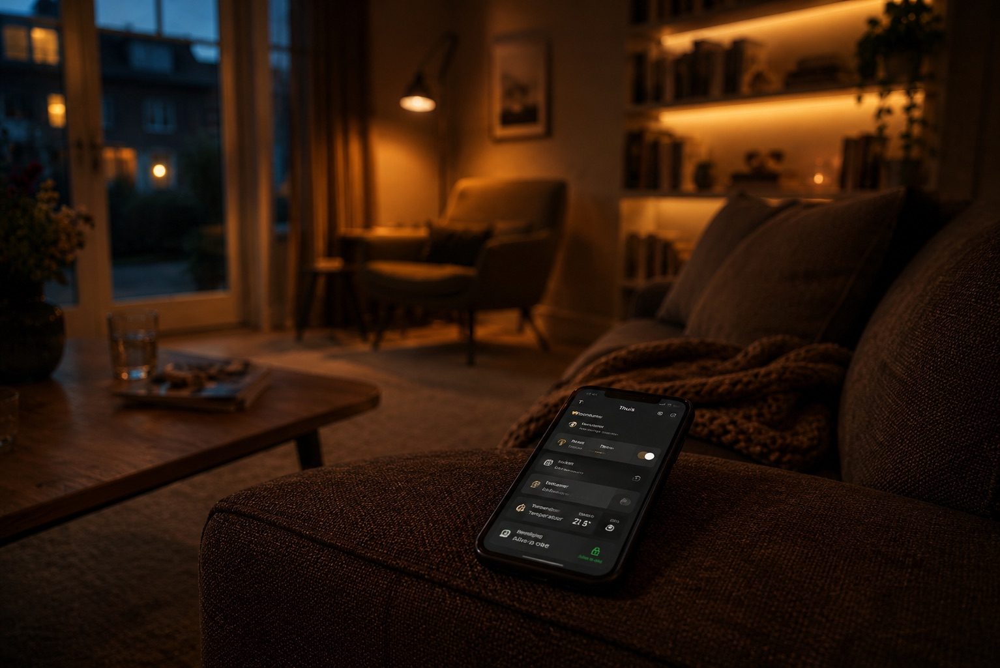
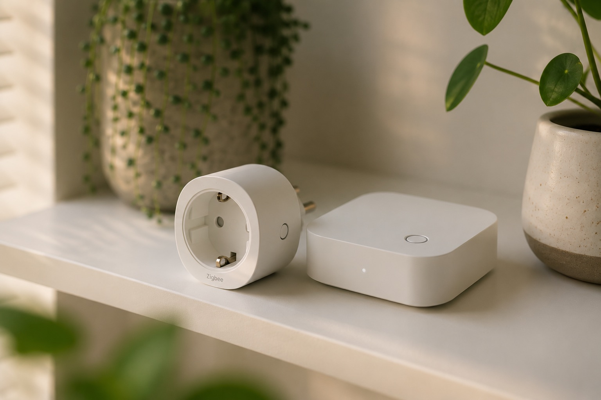
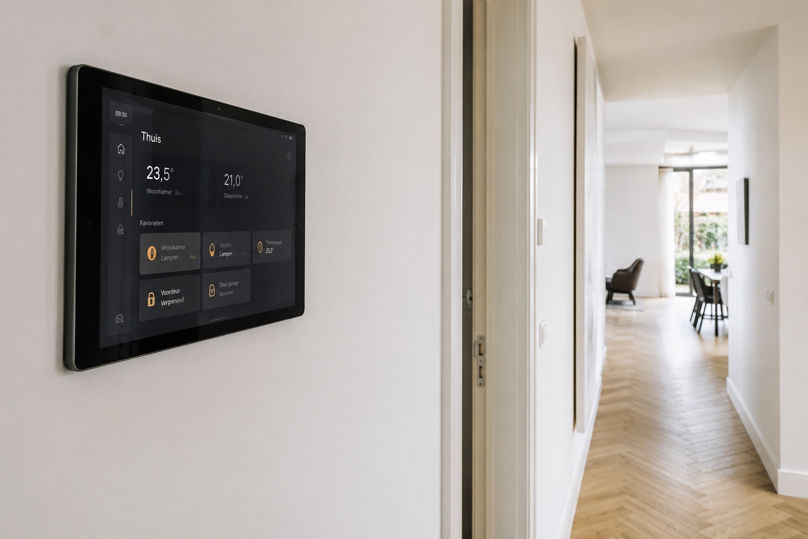

Jouw huis automatiseren met Home Assistant, Zigbee-verlichting, slimme thermostaten en een energiedashboard. BennIT installeert het complete systeem — lokaal, privacyvriendelijk en volledig op maat.

Home Assistant is het krachtigste open-source smart home platform: volledig lokaal, geen verplichte cloudabonnementen en koppelt met vrijwel elk apparaat. We installeren Home Assistant op een dedicated server (mini-pc of Raspberry Pi), richten het in en bouwen automatiseringen die passen bij jouw leefpatroon.

Zigbee is het communicatieprotocol voor de meeste smart home apparaten (Philips Hue, IKEA Trådfri, Aqara, etc.). In tegenstelling tot wifi verbruikt Zigbee nauwelijks stroom, maakt geen gebruik van je internet-router en vormt een eigen mesh-netwerk. Hierdoor zijn Zigbee-apparaten betrouwbaarder en sneller dan wifi-varianten.
We installeren een Zigbee-coördinator die rechtstreeks in Home Assistant integreert en koppelen al je apparaten aan één overzichtelijk systeem.
Via de P1-poort van je slimme meter lezen we real-time je energieverbruik uit. Combineer dit met zonnepaneel-data en smarthome-apparaten voor een volledig energiedashboard in Home Assistant. Je ziet precies welk apparaat wat verbruikt — en automatiseringen zorgen dat wasmaschine of vaatwasser draait wanneer stroom het goedkoopst is.

Naast Home Assistant installeren we ook:
Alle systemen die we installeren zijn draadloos en worden achteraf geplaatst. Je begint met verlichting en thermostaat, en breidt later uit — alles werkt samen als één geheel in Home Assistant.
Nee. Veel systemen zijn draadloos en worden achteraf geplaatst zonder grote verbouwing. We beoordelen wat mogelijk is in jouw woning bij het adviesgesprek.
Lokale automatiseringen (via een home hub) werken ook offline. Voor bediening op afstand en cloudkoppelingen heb je internet nodig.
Heb je een iPhone? Dan is Apple HomeKit de meest naadloze keuze. Gebruik je meer Google-producten of Android? Dan past Google Home beter. We adviseren je bij het kennismakingsgesprek.
Ja, alle systemen die we installeren zijn modulair. Je begint klein en voegt later apparaten toe — alles werkt samen in hetzelfde ecosysteem.
Ja, dit is een van onze specialisaties. We installeren Home Assistant op een dedicated server, koppelen je Zigbee-apparaten en bouwen automatiseringen op maat. Het systeem werkt lokaal — ook als het internet uitvalt.
Home Assistant draait lokaal op je eigen hardware. Geen verplichte cloud, geen abonnementskosten en veel meer mogelijkheden voor automatisering. Google Home en Apple HomeKit kunnen wél worden geïntegreerd als je dat wil — je behoudt het beste van beide werelden.